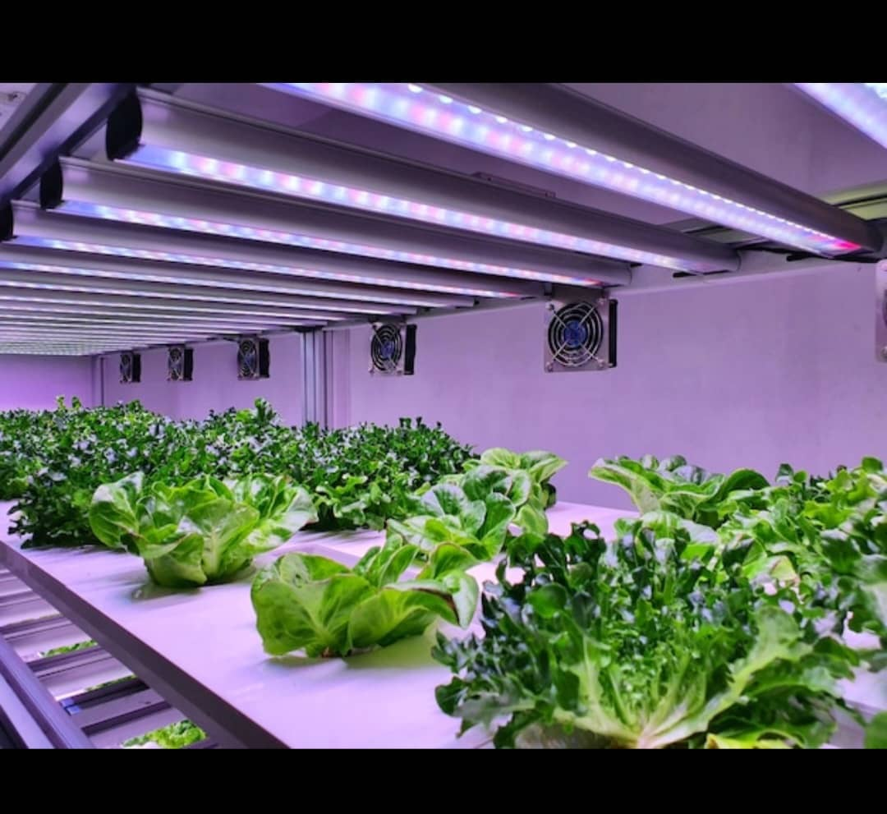

L'hydroculture est une méthode innovante de culture des plantes sans sol, utilisant une solution nutritive.
Regarder la vidéo introductive

Fabrication du Système Hydroponique
La fabrication d'un système hydroponique peut être un projet passionnant et gratifiant,
que vous soyez un jardinier amateur ou un cultivateur expérimenté.
Voici un guide étape par étape pour créer un système hydroponique simple,
en utilisant des matériaux facilement disponibles.
1. Choix du Type de Système Hydroponique
Avant de commencer, il est important de choisir le type de système hydroponique que vous souhaitez construire.
Voici quelques options populaires :
Système NFT (Nutrient Film Technique) : Un film mince de solution nutritive circule sur les racines des plantes.
Système DWC (Deep Water Culture) : Les racines des plantes sont immergées dans une solution nutritive oxygénée.
Système à Goutte-à-Goutte : La solution nutritive est administrée directement aux racines par des goutteurs.
Système Ebb and Flow (ou Flood and Drain) : Le substrat est inondé de solution nutritive puis drainé.
Pour ce guide, nous allons nous concentrer sur la fabrication d'un système DWC, qui est relativement simple et efficace.
2. Matériaux Nécessaires
Pour un Système DWC :
Conteneur : Un seau en plastique opaque (5 à 20 litres) ou un réservoir en plastique.
Couvercle : Un couvercle en plastique pour le conteneur, avec des trous pour les pots de culture.
Pots de Culture : Petits pots en plastique ou en filet pour contenir les plantes.
Solution Nutritive : Nutriments hydroponiques spécifiques pour les plantes.
Pompe à Air : Pour oxygéner la solution nutritive.
Pierre à Oxygène : Pour diffuser l'air dans l'eau.
Tuyaux en PVC : Pour relier la pompe à air à la pierre à oxygène.
pH-mètre et Conductimètre : Pour mesurer le pH et la conductivité de la solution nutritive.
Substrat : (facultatif) Laine de roche, billes d'argile ou autre substrat pour soutenir les plantes.
3. Étapes de Fabrication
a. Préparation du Conteneur
Percer des Trous : Utilisez un cutter ou une scie pour percer des trous dans le couvercle du conteneur.
Les trous doivent être suffisamment grands pour accueillir les pots de culture, mais pas trop grands pour que les pots ne tombent pas.
Peindre le Conteneur : Si le conteneur est transparent, peignez-le en noir ou en une couleur opaque pour empêcher la lumière d'entrer, ce qui pourrait favoriser la croissance d'algues.
b. Installation de la Pompe à Air
Connecter la Pompe : Fixez le tuyau en PVC à la sortie de la pompe à air.
Installer la Pierre à Oxygène : Attachez la pierre à oxygène à l'autre extrémité du tuyau et placez-la au fond du conteneur.
c. Préparation de la Solution Nutritive
Remplir le Conteneur : Remplissez le conteneur avec de l'eau propre jusqu'à environ 5 cm du bord.
Ajouter les Nutriments : Suivez les instructions du fabricant pour ajouter la solution nutritive à l'eau. Utilisez un pH-mètre pour vérifier et ajuster le pH de la solution entre 5,5 et 6,5.
d. Planter les Semences
Préparer les Pots de Culture : Remplissez les pots de culture avec le substrat de votre choix (laine de roche, billes d'argile, etc.).
Planter les Semences : Plantez les graines ou les jeunes plants dans les pots et placez-les dans les trous du couvercle.
e. Mise en Route du Système
Brancher la Pompe à Air : Branchez la pompe à air pour commencer à oxygéner la solution nutritive.
Surveiller le Système : Vérifiez régulièrement le niveau d'eau, le pH et la concentration en nutriments. Ajustez si nécessaire.
4. Entretien du Système
Surveillance : Gardez un œil sur la santé des plantes et sur la solution nutritive. Remplacez la solution tous les 1 à 2 semaines.
Nettoyage : Nettoyez le système régulièrement pour éviter l'accumulation de résidus et de maladies.

Gestion et Entretien
La gestion et l'entretien de l'hydroculture sont essentiels pour garantir
la santé des plantes et maximiser les rendements.
Voici un aperçu des principales pratiques à suivre pour assurer le bon fonctionnement d'un système hydroponique.
1. Choix du Système Hydroponique
Il existe plusieurs types de systèmes hydroponiques, chacun ayant ses propres exigences en matière de gestion et d'entretien. Les systèmes les plus courants incluent :
Système NFT (Nutrient Film Technique) : Un film mince de solution nutritive circule sur les racines des plantes.
Système DWC (Deep Water Culture) : Les racines des plantes sont immergées dans une solution nutritive oxygénée.
Système à goutte-à-goutte : La solution nutritive est administrée directement aux racines par des goutteurs.
2. Surveillance de la Solution Nutritive
pH : Le pH de la solution nutritive doit être régulièrement vérifié et maintenu entre 5,5 et 6,5, car cela influence l'absorption des nutriments.
Conductivité Électrique (CE) : Mesurer la CE permet de s'assurer que la concentration de nutriments est adéquate. Des valeurs trop élevées ou trop basses peuvent nuire à la croissance des plantes.
Nutriments : Il est crucial de fournir un mélange équilibré de nutriments, en tenant compte des besoins spécifiques des plantes cultivées.
3. Gestion de l'Eau
Renouvellement de l'Eau : La solution nutritive doit être renouvelée régulièrement pour éviter l'accumulation de sels et de toxines.
Oxygénation : Dans les systèmes comme le DWC, il est important d'assurer une bonne oxygénation de l'eau pour favoriser la santé des racines.
4. Contrôle de l’Environnement
Température : La température ambiante et celle de l'eau doivent être surveillées. La plupart des plantes préfèrent une température entre 18 et 24 °C.
Lumière : Les plantes ont besoin d'un éclairage adéquat, surtout si elles sont cultivées en intérieur. Des lampes LED ou fluorescentes peuvent être utilisées pour fournir la lumière nécessaire.
Humidité : Maintenir un niveau d'humidité approprié est crucial pour éviter les maladies fongiques et favoriser la transpiration des plantes.
5. Entretien des Équipements
Nettoyage : Les réservoirs, tuyaux et autres équipements doivent être nettoyés régulièrement pour éviter l'accumulation de résidus et de biofilm.
Vérification des Pompes et Systèmes d'Aération : Assurez-vous que les pompes fonctionnent correctement et que l'oxygénation est suffisante.
6. Surveillance des Plantes
Observation : Surveillez régulièrement les plantes pour détecter des signes de stress, de maladies ou de carences en nutriments.
Taille et Élagage : En fonction des espèces cultivées, il peut être nécessaire de tailler les plantes pour favoriser une meilleure circulation de l'air et une exposition à la lumière.
7. Gestion des Pests et Maladies
Prévention : Utilisez des méthodes de lutte intégrée pour prévenir les infestations, comme l'introduction de prédateurs naturels ou l'utilisation de pièges.
Traitement : En cas d'infestation, il est important d'agir rapidement avec des traitements appropriés, en privilégiant des solutions biologiques lorsque cela est possible.

Nettoyage du Système Hydroponique
Le nettoyage du système hydroponique est une étape cruciale pour maintenir la santé des plantes et assurer un rendement optimal.
Un entretien régulier permet d'éviter l'accumulation de résidus, de biofilm, de maladies et de parasites.
Voici un guide détaillé sur le nettoyage d'un système hydroponique :
1. Fréquence de Nettoyage
Nettoyage Régulier : Il est recommandé de nettoyer le système tous les 2 à 4 semaines, en fonction de la taille du système et du type de culture.
Nettoyage Profond : Un nettoyage plus approfondi doit être effectué à la fin de chaque cycle de culture ou lorsque des signes de contamination sont détectés.
2. Matériel Nécessaire
Gants en latex ou en nitrile
Brosse douce ou éponge
Seau
Solution de nettoyage (eau chaude, vinaigre blanc, ou un nettoyant doux)
Désinfectant (comme l'eau de Javel diluée ou un désinfectant à base de peroxyde d'hydrogène)
Chiffons propres
Tuyau d'arrosage (si nécessaire)
3. Étapes de Nettoyage
a. Préparation
Débrancher le Système : Avant de commencer, débranchez toutes les pompes et les équipements électriques pour éviter tout risque d'électrocution.
Vider le Réservoir : Retirez toute la solution nutritive restante du réservoir et jetez-la de manière appropriée.
b. Nettoyage des Composants
Réservoir :
Rincez le réservoir à l'eau claire pour éliminer les résidus.
Utilisez une brosse douce ou une éponge avec une solution de nettoyage pour frotter les parois internes.
Rincez abondamment à l'eau claire pour éliminer tout résidu de nettoyant.
Tuyaux et Goutteurs :
Démontez les tuyaux et les goutteurs si possible.
Faites-les tremper dans une solution de nettoyage pendant environ 30 minutes.
Utilisez une brosse pour nettoyer l'intérieur des tuyaux, puis rincez à l'eau claire.
Supports de Culture :
Si vous utilisez des supports de culture (comme des billes d'argile ou de la laine de roche), nettoyez-les ou remplacez-les si nécessaire.
Les supports en laine de roche peuvent être stérilisés en les faisant tremper dans une solution de désinfectant.
Pompes et Équipements :
Nettoyez les pompes et les aérateurs en suivant les instructions du fabricant.
Vérifiez les filtres et remplacez-les si nécessaire.
c. Désinfection
Désinfecter le Système : Après le nettoyage, désinfectez toutes les surfaces avec une solution de désinfectant (par exemple, une solution d'eau de Javel diluée à 10% ou du peroxyde d'hydrogène).
Rincer : Rincez à l'eau claire pour éliminer tout résidu de désinfectant.
4. Remontage et Remplissage
Remonter le Système : Remettez en place tous les composants après qu'ils aient séché complètement.
Remplir le Réservoir : Remplissez le réservoir avec de l'eau propre et préparez une nouvelle solution nutritive en suivant les recommandations pour les plantes que vous cultivez.
5. Surveillance Post-Nettoyage
Vérification : Après le nettoyage et le remplissage, surveillez le système pendant quelques jours pour vous assurer qu'il fonctionne correctement et qu'il n'y a pas de fuites.
Observation des Plantes : Gardez un œil sur les plantes pour détecter tout signe de stress ou de maladie après le nettoya